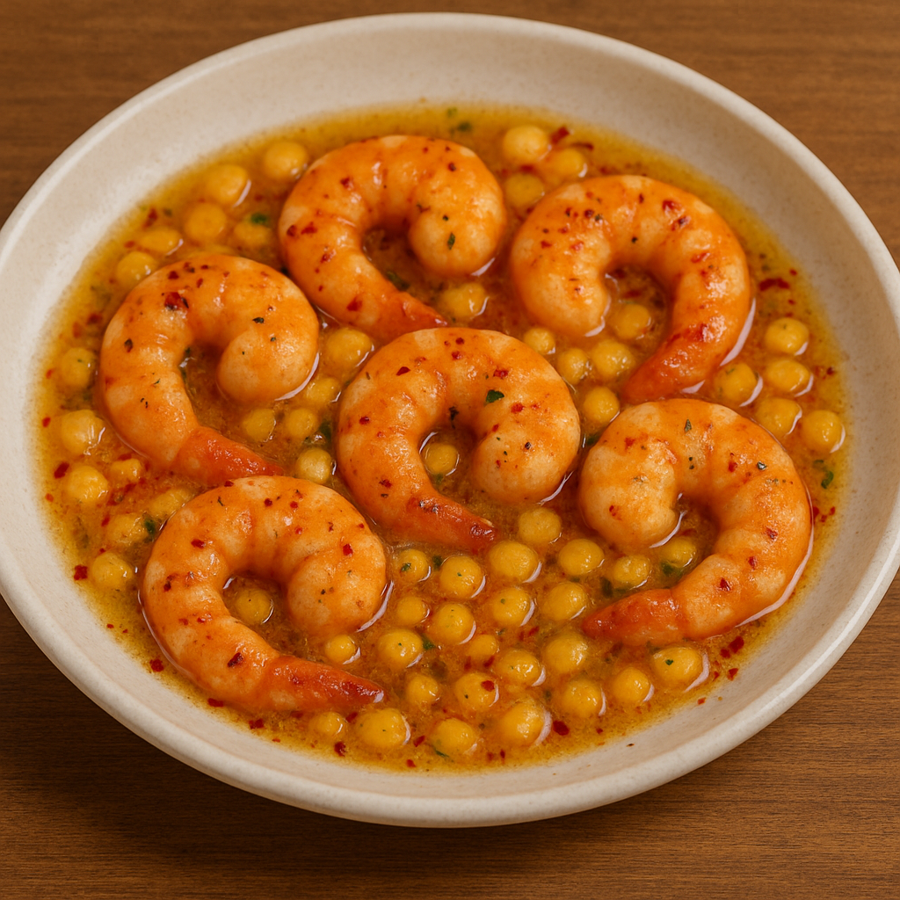

Home
Buttered Shrimp

Spicy Buttered Shrimp with Corn and Pepper Flakes
A rich and flavorful seafood treat cooked in creamy margarine for a velvety finish, spicy buttered shrimp with corn is the star of this dish. Coated in a glossy golden sauce that contains margarine, garlic, and a generous amount of chili heat, the shrimp are juicy but still tender. Sprinkled throughout are sweet yellow corn kernels, which provide natural sweetness bursts to counterbalance the spice. The dish is as visually appealing as it is delicious, with the shrimp's vivid orange-red color contrasting beautifully with the sunny yellow corn and chili flakes. A comforting yet robust seafood favorite, each bite offers the ideal balance of buttery richness, delicate sweetness, and fiery spice.
Ingredients
- 500 g (1 lb) fresh shrimp, cleaned and deveined (leave shells on or remove, depending on preference)
- 1 cup sweet corn kernels (fresh, frozen, or canned, drained)
- 3–4 tbsp margarine
- 4 cloves garlic, minced
- 1–2 tbsp cooking oil (prevents margarine from burning)
- 1–2 tsp chili flakes (adjust to spice preference)
- 1 small red chili (optional, for extra heat, sliced thin)
- ½ tsp paprika (optional, for color and depth)
- Salt and pepper to taste
Optional for Extra Flavor
- ½ tsp sugar or honey (to balance spice and saltiness)
- 1 tbsp lemon or calamansi juice (for brightness)
- Fresh parsley or spring onions, chopped (for garnish)
Steps
- Prepare the shrimp
- Clean and devein the shrimp. Pat them dry with paper towels to avoid excess water in the pan.
- Heat the oil and margarine
- In a large pan over medium heat, add 1–2 tbsp cooking oil. Once warm, add 3–4 tbsp margarine and let it melt completely. The oil helps prevent the margarine from burning.
- Sauté the garlic
- Add the minced garlic and cook for 30–45 seconds until fragrant, being careful not to burn it
- Add the shrimp
- Increase the heat to medium-high. Add the shrimp and cook for 1–2 minutes per side until they start turning pink
- Season and spice
- Sprinkle in chili flakes, paprika, salt, and pepper. Stir well to evenly coat the shrimp.
- Add the corn
- Toss in the sweet corn kernels. Stir everything together and cook for another 2–3 minutes so the corn absorbs the buttery-spicy flavor.
- Finish with flavor balance
- Optional: add ½ tsp sugar to mellow the spice and 1 tbsp lemon or calamansi juice for brightness. Stir to combine.
- Simmer briefly
- Let the mixture cook for 1–2 more minutes until the shrimp are fully cooked but still tender, and the sauce has thickened slightly.
- Serve
- Transfer to a serving plate, garnish with parsley or spring onions, and serve immediately while hot — perfect with steamed rice.